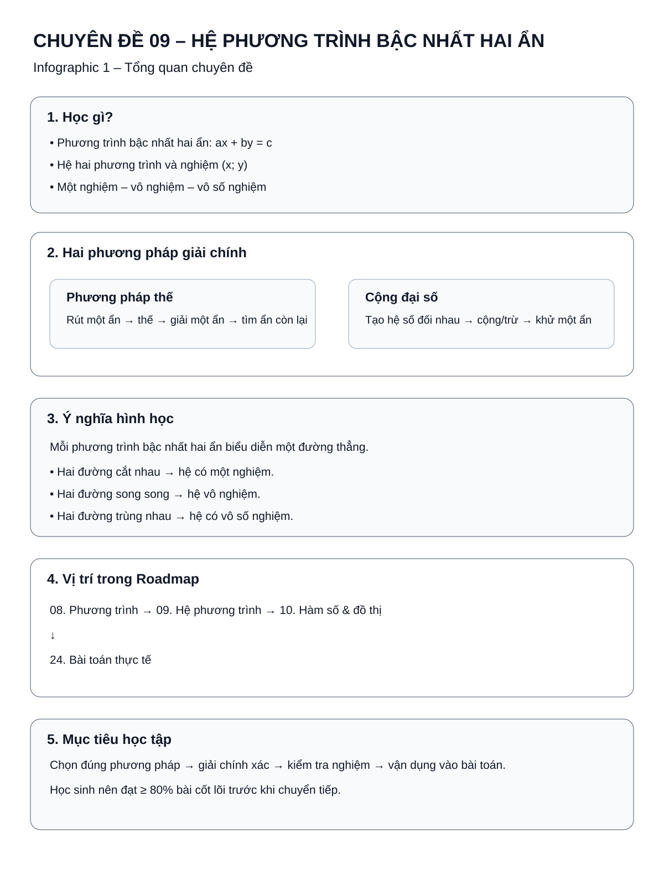
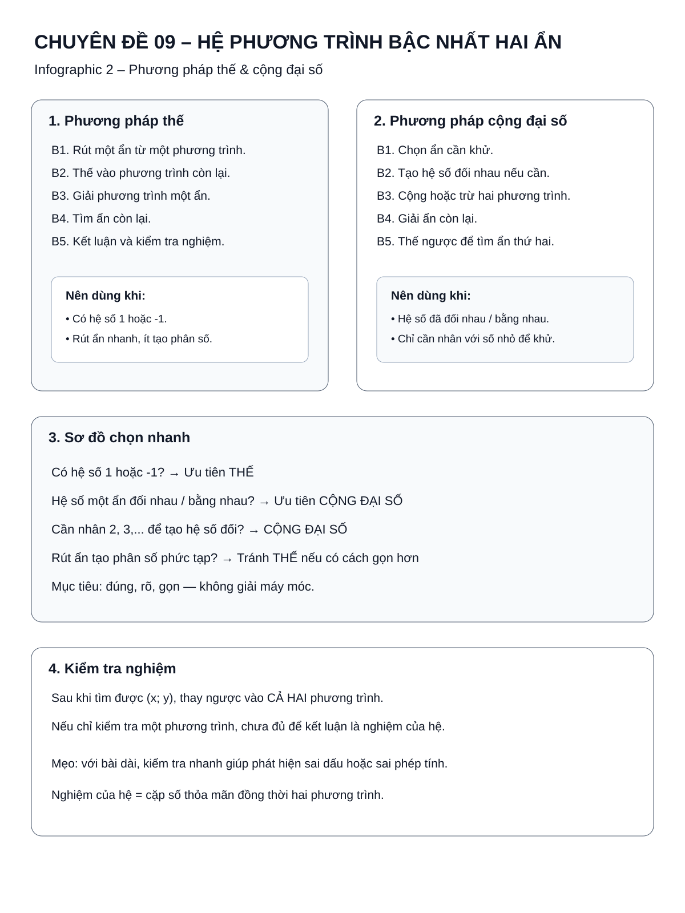
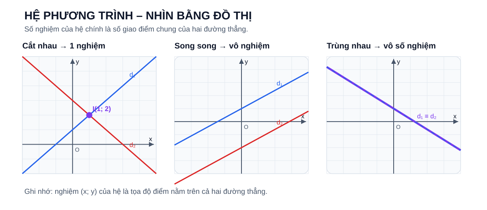
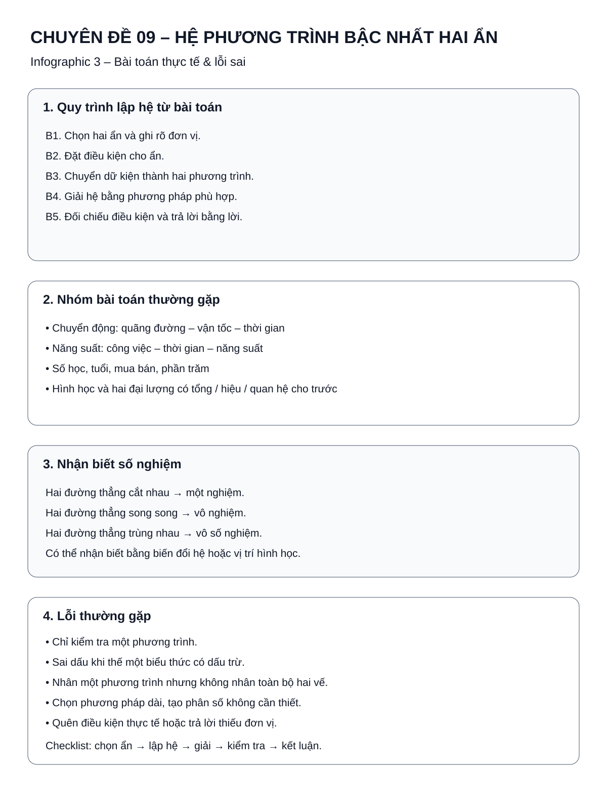

Chuyên đề 09 – Hệ phương trình bậc nhất hai ẩn
Trạng thái: Đã kiểm định nội dung học thuật; cấu trúc Roadmap chuẩn 11 mục.
Lớp trọng tâm: 9 Mạch kiến thức: Đại số Mức ưu tiên: ⭐⭐⭐⭐⭐
Vai trò trong Roadmap: kết nối trực tiếp từ phương trình một ẩn sang bài toán có hai đại lượng chưa biết; là nền tảng cho bài toán thực tế, hàm số và ôn thi vào lớp 10.
🧭 1. Bản đồ kiến thức
Infographic tổng quan

HỆ PHƯƠNG TRÌNH BẬC NHẤT HAI ẨN
│
├── 1. Phương trình bậc nhất hai ẩn
│ ├── Dạng ax + by = c
│ ├── Nghiệm (x; y)
│ └── Biểu diễn hình học bằng đường thẳng
│
├── 2. Hệ hai phương trình bậc nhất hai ẩn
│ ├── Một nghiệm
│ ├── Vô nghiệm
│ └── Vô số nghiệm
│
├── 3. Phương pháp giải
│ ├── Thế
│ ├── Cộng đại số
│ └── Chọn phương pháp phù hợp
│
├── 4. Vận dụng: số nghiệm và tham số
│ ├── Nhận biết số nghiệm
│ ├── Điều kiện để có nghiệm đặc biệt
│ └── Tìm tham số
│
└── 5. Bài toán thực tế
├── Chọn ẩn
├── Lập hệ
├── Giải hệ
└── Đối chiếu điều kiện thực tế
🎯 2. Mục tiêu cần đạt
Sau khi hoàn thành chuyên đề, học sinh cần có thể:
- [ ] Hiểu khái niệm phương trình bậc nhất hai ẩn và nghiệm của phương trình.
- [ ] Hiểu nghiệm của hệ là cặp số thỏa mãn đồng thời cả hai phương trình.
- [ ] Giải thành thạo hệ bằng phương pháp thế.
- [ ] Giải thành thạo hệ bằng phương pháp cộng đại số.
- [ ] Biết chọn phương pháp ngắn gọn thay vì giải máy móc.
- [ ] Kiểm tra nghiệm bằng cách thay ngược vào hệ ban đầu.
- [ ] Nhận biết trường hợp hệ có một nghiệm, vô nghiệm hoặc vô số nghiệm.
- [ ] Lập được hệ từ bài toán thực tế đơn giản và trung bình.
- [ ] Xử lý được bài toán có tham số ở mức vận dụng phù hợp với THCS.
📖 3. Kiến thức cốt lõi
Infographic – Phương pháp thế và cộng đại số

3.1. Phương trình bậc nhất hai ẩn
Phương trình bậc nhất hai ẩn có dạng:
trong đó a, b không đồng thời bằng 0.
Một cặp số (x_0; y_0) là nghiệm nếu:
Ví dụ:
có nghiệm (2;1) vì:
Trên tập số thực, một phương trình bậc nhất hai ẩn có vô số nghiệm.
3.2. Hệ hai phương trình bậc nhất hai ẩn
Hệ có dạng:
Nghiệm của hệ là cặp (x;y) thỏa mãn đồng thời cả hai phương trình.
Ví dụ:
có nghiệm (3;2).
3.3. Ý nghĩa hình học
Mỗi phương trình bậc nhất hai ẩn biểu diễn một đường thẳng trên mặt phẳng tọa độ.
Vì vậy:
- Hai đường thẳng cắt nhau → hệ có một nghiệm.
- Hai đường thẳng song song → hệ vô nghiệm.
- Hai đường thẳng trùng nhau → hệ có vô số nghiệm.
Trực quan – số nghiệm của hệ

Có thể đọc hình theo một quy tắc duy nhất:
số nghiệm của hệ = số điểm chung của hai đường thẳng.
- cắt nhau tại một điểm → một nghiệm;
- không có điểm chung → vô nghiệm;
- trùng nhau → mọi điểm trên đường thẳng đều là điểm chung, nên có vô số nghiệm.
Đây không phải một quy tắc mới tách biệt với đại số: nó là cách nhìn hình học của chính điều kiện “một cặp
(x; y)phải thỏa đồng thời cả hai phương trình”.
Đây là cầu nối quan trọng sang Chuyên đề 10 – Hàm số và đồ thị.
3.3A. Các phép biến đổi tương đương của hệ
Những thao tác sau giữ nguyên tập nghiệm của hệ:
- đổi thứ tự hai phương trình;
- nhân cả hai vế của một phương trình với cùng một số khác
0; - thay một phương trình bằng tổng của chính phương trình đó với một bội của phương trình còn lại.
Phương pháp cộng đại số dựa trực tiếp vào thao tác thứ ba. Ví dụ, nếu cộng hai phương trình để khử y, ta không tạo ra nghiệm mới và cũng không làm mất nghiệm cũ, miễn là các phép biến đổi được thực hiện trên toàn bộ hai vế.
Không được chỉ cộng/trừ riêng các hạng tử thuận mắt hoặc nhân một vế mà quên vế còn lại.
3.4. Hai phương pháp giải cơ bản
Phương pháp thế
Quy trình:
- Rút một ẩn theo ẩn còn lại từ một phương trình.
- Thế vào phương trình kia.
- Giải phương trình một ẩn.
- Tìm ẩn còn lại.
- Kết luận nghiệm của hệ.
Ví dụ:
Từ phương trình đầu:
Thế vào phương trình hai:
Suy ra:
Vậy hệ có nghiệm:
Khi nào nên dùng thế?
Ưu tiên phương pháp thế khi một phương trình đã có hệ số 1 hoặc -1 ở một ẩn, hoặc có thể dễ dàng rút một ẩn.
Phương pháp cộng đại số
Mục tiêu là làm cho hệ số của một ẩn trở thành hai số đối nhau hoặc bằng nhau để khử ẩn đó.
Ví dụ:
Cộng hai phương trình:
Thế vào phương trình đầu:
Vậy:
Khi nào nên dùng cộng đại số?
Ưu tiên khi hệ số của một ẩn đã đối nhau, bằng nhau, hoặc chỉ cần nhân một phương trình với số nhỏ để khử ẩn.
Chọn phương pháp nhanh
| Dấu hiệu | Phương pháp nên ưu tiên |
|---|---|
Có hệ số 1 hoặc -1 |
Thế |
| Hệ số một ẩn đối nhau | Cộng đại số |
| Hệ số một ẩn bằng nhau | Trừ hai phương trình |
| Chỉ cần nhân một phương trình với 2, 3,... | Cộng đại số |
| Rút ẩn tạo phân số phức tạp | Tránh thế nếu có lựa chọn khác |
Không có quy định bắt buộc phải dùng một phương pháp cố định. Mục tiêu là đúng, rõ và gọn.
3.5. Số nghiệm của hệ
Xét hệ:
Ở mức THCS, có thể nhận biết qua biến đổi hoặc qua vị trí tương đối của hai đường thẳng.
Một nghiệm
Ví dụ:
Hai phương trình độc lập và hệ giải được một cặp duy nhất.
Vô nghiệm
Ví dụ:
Nhân phương trình đầu với 2 được:
mâu thuẫn với 2x+2y=5.
Vậy hệ vô nghiệm.
Vô số nghiệm
Ví dụ:
Phương trình thứ hai chính là hai lần phương trình thứ nhất.
Vì vậy hai phương trình tương đương và hệ có vô số nghiệm.
Mở rộng – kiểm tra nhanh số nghiệm mà không cần chia hệ số
Với hệ
a1 x + b1 y = c1
a2 x + b2 y = c2
trong đó mỗi phương trình thực sự là phương trình bậc nhất hai ẩn, đặt:
D = a1*b2 - a2*b1
D ≠ 0→ hai đường thẳng cắt nhau, hệ có đúng một nghiệm;D = 0, đồng thờia1*c2 - a2*c1 = 0vàb1*c2 - b2*c1 = 0→ hai phương trình biểu diễn cùng một đường thẳng, hệ có vô số nghiệm;D = 0nhưng ít nhất một trong hai biểu thức còn lại khác0→ hai đường thẳng song song phân biệt, hệ vô nghiệm.
Cách viết này đặc biệt hữu ích khi một số hệ số bằng 0, vì tránh việc chia cho một hệ số có thể bằng 0. Đây là công cụ kiểm tra/mở rộng, không bắt buộc phải dùng thay cho thế hoặc cộng đại số.
🔗 4. Kiến thức liên quan
- Cần nắm trước: 08. Phương trình và bất phương trình.
- Hỗ trợ biến đổi: 04. Biểu thức đại số, 06. Phân tích đa thức thành nhân tử, 07. Phân thức đại số.
- Dùng tiếp: 10. Hàm số và đồ thị, 24. Bài toán thực tế và mô hình hóa.
🧩 5. Các dạng bài cần nắm vững
Infographic – Bài toán thực tế và lỗi sai

Dạng 1 – Kiểm tra một cặp số có là nghiệm không
Thay trực tiếp (x;y) vào từng phương trình.
Nếu thỏa mãn cả hai thì là nghiệm của hệ.
Dạng 2 – Giải hệ bằng phương pháp thế
Ví dụ:
Từ phương trình đầu:
Thế vào phương trình hai:
Suy ra:
Vậy:
Dạng 3 – Giải hệ bằng cộng đại số
Ví dụ:
Cộng hai phương trình:
Thế x=3 vào phương trình đầu:
Vậy:
Dạng 4 – Hệ cần biến đổi trước
Ví dụ:
Phải bỏ ngoặc và thu gọn trước:
Suy ra hệ vô nghiệm.
Dạng 5 – Hệ có hệ số phân số hoặc biểu thức cần khử mẫu
Với hệ bậc nhất hai ẩn có hệ số phân số, có thể:
- Tìm mẫu chung của các hệ số.
- Nhân hai vế của từng phương trình với một số khác
0thích hợp để khử mẫu. - Thu gọn thành hệ quen thuộc.
- Giải hệ.
Nếu mẫu chứa biến, bài toán có thể không còn là hệ phương trình bậc nhất hai ẩn. Khi đó phải tìm điều kiện xác định và xem đây là nội dung kết nối/mở rộng, không áp dụng máy móc quy trình của hệ bậc nhất.
Dạng 6 – Tìm tham số để hệ có nghiệm cho trước
Ví dụ: tìm m để (2;1) là nghiệm của hệ.
Phương pháp:
- Thay
x=2,y=1vào các phương trình. - Giải điều kiện thu được đối với
m.
Dạng 7 – Tìm tham số để hệ có một nghiệm, vô nghiệm hoặc vô số nghiệm
Mức vận dụng: cần xét cẩn thận các giá trị tham số làm thay đổi hệ số hoặc làm một phương trình suy biến.
Cách làm phù hợp ở THCS:
- Biến đổi hai phương trình về dạng đơn giản.
- So sánh các hệ số hoặc đưa về hai phương trình tương đương/mâu thuẫn.
- Xác định điều kiện của tham số.
Cần đặc biệt chú ý các giá trị tham số làm mất bậc hoặc làm hệ số trở thành 0.
Dạng 8 – Bài toán bằng cách lập hệ phương trình
Quy trình 5 bước:
- Chọn hai ẩn và ghi rõ đơn vị.
- Đặt điều kiện cho ẩn.
- Chuyển dữ kiện thành hai phương trình.
- Giải hệ.
- Đối chiếu điều kiện và trả lời bằng lời.
🚀 6. Dạng bài thi vào lớp 10
Giải hệ trực tiếp – ⭐⭐⭐⭐⭐
Đây là kỹ năng nền tảng và có thể xuất hiện độc lập hoặc được dùng như một bước trong bài toán lớn hơn.
Học sinh cần thành thạo:
- hệ hệ số nguyên;
- hệ cần nhân để khử;
- hệ có phân số đơn giản;
- hệ cần biến đổi trước.
Hệ có tham số – ⭐⭐⭐⭐
Các yêu cầu luyện tập có thể gồm:
- tìm
mđể hệ có nghiệm thỏa điều kiện; - tìm
mđể nghiệm có quan hệ nhưx+y=k,x>0,x=y, ...; - xác định số nghiệm của hệ.
Lập hệ từ bài toán thực tế – ⭐⭐⭐⭐⭐
Các nhóm quen thuộc:
- chuyển động;
- năng suất;
- số học;
- phần trăm;
- mua bán;
- hình học;
- bài toán hai đại lượng có tổng và quan hệ khác.
Kết hợp hệ phương trình với hàm số – ⭐⭐⭐⭐
Nghiệm của hệ có thể được hiểu là giao điểm của hai đường thẳng. Đây là mối nối trực tiếp sang Chuyên đề 10.
⚠️ 7. Lỗi sai thường gặp
❌ Lỗi 1 – Chỉ kiểm tra một phương trình
Một cặp số là nghiệm của hệ khi nó thỏa cả hai phương trình.
❌ Lỗi 2 – Sai dấu khi thế
Ví dụ có y=5-x, khi thế cần giữ ngoặc nếu biểu thức nằm sau dấu trừ.
❌ Lỗi 3 – Nhân một phương trình nhưng không nhân toàn bộ hai vế
Nếu nhân phương trình với -2, phải nhân mọi hạng tử ở cả hai vế.
❌ Lỗi 4 – Cộng đại số nhưng khử sai ẩn
Chỉ khử được khi hệ số của ẩn cần khử là hai số đối nhau sau biến đổi.
❌ Lỗi 5 – Quên kết luận cặp nghiệm
Không chỉ viết x=... và y=...; nên kết luận:
❌ Lỗi 6 – Lập hệ nhưng quên điều kiện của ẩn
Trong bài toán thực tế, nghiệm đại số có thể không phù hợp thực tế.
❌ Lỗi 7 – Không kiểm tra lại
Thay nghiệm vào hệ ban đầu là cách phát hiện rất nhanh lỗi tính toán.
📝 8. Luyện tập tiếp theo
Micro-practice trong các Learning Cards dùng để kiểm tra nhanh ngay sau khi học. Khi muốn luyện sâu hơn, luyện từng skill hoặc làm bài tự luận, hãy chuyển sang Practice Room.
🎯 Mở Practice Room – Chuyên đề 09{ .md-button .md-button--primary }
Trong Practice Room:
- Luyện nhanh tương tác: Practice Engine chọn câu từ ngân hàng lớn, có feedback, gợi ý và Tutor.
- Luyện tự luận & trình bày: tự giải trên giấy/vở rồi mở gợi ý hoặc lời giải để tự đối chiếu.
- Core / Entrance10 / Challenge được tách rõ.
Phân biệt mục đích
Micro-practice kiểm tra hiểu ngay; Practice Room dùng để rèn kỹ năng. Kết quả luyện tập là formative evidence, không phải điểm kiểm tra cuối chuyên đề.
✅ 9. Tự kiểm tra mức độ sẵn sàng
Khi đã luyện tương đối chắc, hãy làm Core Readiness Check.
✅ Bắt đầu Core Readiness Check{ .md-button .md-button--primary }
Trong Readiness Check:
- không hint và không Tutor khi đang làm;
- không báo đúng/sai từng câu;
- chỉ chấm sau khi bấm Nộp bài;
- kết quả phân tích theo assessed skill;
- là Soft Mastery: không khóa chuyên đề tiếp theo;
- Entrance10 / Challenge không tính vào Core readiness.
🔄 10. Liên kết Roadmap
- ← Trước: 08. Phương trình và bất phương trình
- → Tiếp theo: 10. Hàm số và đồ thị
- Ứng dụng mạnh: 24. Bài toán thực tế và mô hình hóa
-
Nền tảng biến đổi: 04. Biểu thức đại số, 06. Phân tích đa thức, 07. Phân thức đại số
-
✏️ Luyện tập: Bài tập Chuyên đề 09
- ✅ Tự kiểm tra: Tự kiểm tra Chuyên đề 09
Xem toàn bộ hệ thống tại Blueprint 25 chuyên đề.
🏁 11. Điều kiện hoàn thành
Chuyên đề được xem là đủ sẵn sàng để học tiếp khi học sinh có phần lớn các bằng chứng sau:
- [ ] Hiểu và giải thích được các quy tắc Core của chuyên đề.
- [ ] Làm tương đối ổn định các skill Core trong Practice Room.
- [ ] Không lặp lại ổn định cùng một lỗi nền tảng sau khi đã được chữa.
- [ ] Core Readiness Check đạt khoảng 80% hoặc học sinh đã hiểu và chữa được các lỗi còn lại.
- [ ] Có thể trình bày ít nhất một số bài tự luận Core mà không mở lời giải trước.
Soft Mastery
Không cần đạt 100% mới được học tiếp. Nếu Readiness Check cho thấy một vài kỹ năng còn yếu, hệ thống khuyến nghị luyện lại đúng kỹ năng đó; học sinh vẫn có thể chuyển sang chuyên đề tiếp theo.
Core độc lập Extension
Entrance10 và Specialized-Challenge không phải điều kiện để hoàn thành KNTT Core.